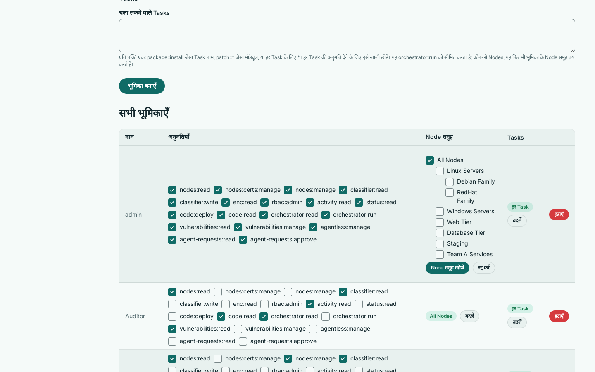

उपयोग
उपयोगकर्ता, भूमिकाएँ और टोकन
भूमिकाओं और अनुमतियों के ज़रिये लोगों को पहुँच दीजिए, अपने पहचान प्रदाता से साइन इन कीजिए, और प्रोग्रामों के लिए टोकन जारी कीजिए।
कंसोल में हर चीज़ किसी अनुमति के पीछे है, और हर अनुमति किसी व्यक्ति तक एक भूमिका के ज़रिये पहुँचती है। प्रोग्राम, जैसे enc-bridge, इसके बजाय सेवा टोकन का उपयोग करते हैं।
उपयोगकर्ताओं, भूमिकाओं और टोकनों के प्रबंधन के लिए rbac:admin चाहिए।
अनुमतियाँ
| अनुमति | अनुमति देता है |
|---|---|
nodes:read |
Nodes, उनके Facts, Reports, पैकेज, लंबित अपडेट और प्रमाणपत्र स्थितियाँ देखना |
nodes:manage |
Nodes हटाना, और यह सेट करना कि कंसोल लंबित अपडेट के लिए कितनी बार स्कैन करे |
nodes:certs:manage |
प्रमाणपत्रों पर हस्ताक्षर करना, उन्हें निरस्त करना और साफ़ करना - CA admin के बराबर |
classifier:read |
Node समूह देखना |
classifier:write |
Node समूह बनाना, बदलना और हटाना |
enc:read |
वर्गीकरण पढ़ना, जैसे openvoxserver पढ़ता है |
code:read |
रिपॉज़िटरी और deploy देखना |
code:deploy |
deploy शुरू करना |
orchestrator:read |
Jobs देखना |
orchestrator:run |
Jobs शुरू करना (Puppet रन, Tasks, Plans और patch रन), किसी Node की पैकेज रिपोर्टिंग बदलना, और Nodes को लंबित अपडेट के लिए स्कैन करना |
vulnerabilities:read |
कमज़ोरी के निष्कर्ष देखना |
vulnerabilities:manage |
कमज़ोरी प्रदाता कॉन्फ़िगर करना |
agentless:manage |
agentless SSH लक्ष्य और साझा क्रेडेंशियल जोड़ना, बदलना और हटाना, और उनकी host keys पर भरोसा करना |
activity:read |
गतिविधि लॉग देखना |
status:read |
सिस्टम पृष्ठ देखना |
agent-requests:read |
यह देखना कि AI एजेंटों ने क्या चलाने का अनुरोध किया है |
agent-requests:approve |
उन अनुरोधों को स्वीकृत और अस्वीकार करना |
rbac:admin |
उपयोगकर्ताओं, भूमिकाओं, सेवा टोकनों और एजेंट टोकनों का प्रबंधन |
bootstrap admin को हर अनुमति मिलती है। कंसोल के नए संस्करण में जोड़ी गई अनुमति कभी मौजूदा भूमिकाओं में अपने-आप नहीं जुड़ती, इसलिए अपग्रेड के बाद भूमिकाएँ पृष्ठ पर नई अनुमतियाँ उन भूमिकाओं को दीजिए जिनके पास वे होनी चाहिए।
किसी को पहुँच दें
- प्रशासन खोलिए, फिर भूमिकाएँ, और काम के लिए ज़रूरी अनुमतियों वाली भूमिका बनाइए - उदाहरण के लिए, जो व्यक्ति केवल देखता है पर बदलता नहीं, उसके लिए
nodes:read,classifier:readऔरorchestrator:read। - उपयोगकर्ता खोलिए, उपयोगकर्ता बनाइए, और भूमिका सौंपिए।
किसी उपयोगकर्ता की अनुमतियाँ उसकी सभी भूमिकाओं का संयोजन होती हैं। पूरी टीम को एक जैसी भूमिकाएँ देने के लिए उपयोगकर्ता समूह का उपयोग कीजिए।
पासवर्ड और लॉकआउट
ये नियम उन खातों पर लागू होते हैं जो username और पासवर्ड से लॉग इन करते हैं। ये आपके पहचान प्रदाता से साइन इन करने वाले लोगों पर, या सेवा टोकन पर लागू नहीं होते। administrator (rbac:admin) इन्हें प्रशासन, फिर खाता नीति के अंतर्गत सेट करता है। बदलाव हर कंसोल इंस्टेंस पर तुरंत लागू होता है।
पासवर्ड नियम
| नियम | बदले न जाने पर | क्या हो सकता है |
|---|---|---|
| न्यूनतम लंबाई | 12 अक्षर | 8 से 72 |
| इसमें एक छोटा अक्षर, एक बड़ा अक्षर, एक अंक, एक चिह्न होना चाहिए | कोई आवश्यक नहीं | हर एक चालू या बंद |
दो नियम बंद नहीं किए जा सकते: पासवर्ड खाते का username नहीं हो सकता, और 72 bytes से लंबा नहीं हो सकता।
पासवर्ड की जाँच तब होती है जब उसे सेट किया जाता है: जब कोई administrator उपयोगकर्ता बनाता है या किसी उपयोगकर्ता का पासवर्ड सेट करता है, और जब कोई प्राथमिकताएँ के अंतर्गत अपना पासवर्ड बदलता है। इनमें से हर फ़ॉर्म नियम सूचीबद्ध करता है, और अस्वीकार किए गए पासवर्ड ने जिन नियमों को पूरा नहीं किया, उन्हें चिह्नित करता है।
पहले से मौजूद पासवर्ड फिर से नहीं जाँचे जाते। नियम कड़े करने के बाद भी हर कोई लॉग इन कर सकता है; नए नियम हर पासवर्ड के अगली बार बदले जाने पर लागू होते हैं।
लॉकआउट
लगातार 10 विफल पासवर्ड लॉगिन के बाद खाता 15 मिनट के लिए लॉक हो जाता है। दोनों संख्याएँ बदली जा सकती हैं (3 से 100 लॉगिन; 1 से 1,440 मिनट), और लॉकआउट बंद भी किया जा सकता है।
- खाता लॉक रहने के दौरान उसका पासवर्ड सही होने पर भी अस्वीकार होता है। लॉक के दौरान विफल लॉगिन लॉक को लंबा नहीं करते।
- लॉक अपने-आप समाप्त हो जाता है। सफल लॉगिन गिनती को फिर शून्य कर देता है।
- विफल लॉगिन सभी कंसोल इंस्टेंसों में एक साथ गिने जाते हैं।
- लॉगिन पृष्ठ यह नहीं बताता कि खाता लॉक है। यह वही उत्तर देता है जो गलत पासवर्ड पर देता है, क्योंकि «लॉक» कहने से हमलावर को पता चल जाएगा कि कौन-से username मौजूद हैं। हर विफल लॉगिन का संदेश बताता है कि बार-बार प्रयास के बाद खाते लॉक हो जाते हैं।
लॉकआउट का संबंध पासवर्ड का अनुमान लगाने से है, इसलिए यह केवल पासवर्ड लॉगिन रोकता है:
- पहले से खुले सत्र चलते रहते हैं।
- आपके पहचान प्रदाता के ज़रिये साइन इन अब भी काम करता है।
- सेवा टोकन प्रभावित नहीं होते।
- अपना पासवर्ड बदलते समय मौजूदा पासवर्ड माँगा जाता है। गलत मौजूदा पासवर्ड विफल लॉगिन गिना जाता है, और खाता लॉक रहने तक बदलाव अस्वीकार किया जाता है।
खाता अनलॉक करें
प्रशासन खोलिए, फिर उपयोगकर्ता। लॉक खाता … तक लॉक और समय दिखाता है। अनलॉक करें चुनिए, या उपयोगकर्ता को नया पासवर्ड देने के लिए पासवर्ड सेट करें, जिससे खाता भी अनलॉक हो जाता है।
यदि एकमात्र administrator लॉक हो गया है और कोई और खाता अनलॉक नहीं कर सकता, तो लॉक समाप्त होने की प्रतीक्षा कीजिए। किसी को जानबूझकर विफल लॉगिन करके खाता लॉक रखने से रोकने के लिए, कंसोल को ऐसी किसी चीज़ के पीछे रखिए जो /api/v1/auth/login पर अनुरोधों को सीमित करे, या लॉकआउट बंद करके उसी पर निर्भर रहिए।
लॉक, अनलॉक, अस्वीकार किए गए पासवर्ड और नीति में बदलाव ऑडिट लॉग में लिखे जाते हैं; लॉक, अनलॉक और नीति बदलाव गतिविधि पृष्ठ पर भी दिखते हैं।
किसी समूह को भूमिकाएँ दें
उपयोगकर्ता समूह उपयोगकर्ताओं का एक नामित समुच्चय है। किसी समूह को दी गई भूमिकाएँ उसके हर सदस्य के पास होती हैं, उनकी अपनी भूमिकाओं के अतिरिक्त, इसलिए जब कोई टीम बदलती है तो आप हर खाते के बजाय समूह बदलते हैं।
- प्रशासन खोलिए, फिर उपयोगकर्ता समूह, समूह को नाम दीजिए और समूह बनाएँ चुनिए।
- सदस्य के अंतर्गत बदलें चुनिए और समूह के उपयोगकर्ताओं पर टिक कीजिए।
- भूमिकाएँ कॉलम में वे भूमिकाएँ टिक कीजिए जो समूह को देनी चाहिए।
जो व्यक्ति कई समूहों में है, या जिसके पास कोई भूमिका स्वयं भी है और किसी समूह के ज़रिये भी, उसके पास वह एक ही बार होती है। व्यक्ति से भूमिका हटाने पर समूह से मिली भूमिका बनी रहती है, और उसे समूह से हटाने पर उसकी अपनी भूमिका बनी रहती है।
उपयोगकर्ता पृष्ठ हर व्यक्ति के समूह और उनके ज़रिये मिली भूमिकाएँ दिखाता है, जैसे "Patcher via Web ops"। उन्हें वहाँ से अनटिक नहीं किया जा सकता: समूह बदलिए। भूमिकाएँ पृष्ठ दिखाता है कि हर भूमिका किन समूहों को दी गई है।
समूह और सीमाएँ
समूह भूमिकाएँ जोड़ता है; उन्हें मिलाता नहीं। हर भूमिका अब भी अपने Node समूहों पर और, यदि हो, तो अपनी Task सूची के साथ लागू होती है, ठीक वैसे ही जैसे सीधे किसी व्यक्ति को सौंपी गई भूमिकाएँ। जो व्यक्ति ऐसे समूह में है जो web servers पर patch::* तक सीमित भूमिका देता है, और जिसे database servers पर हर Task की अनुमति देने वाली भूमिका भी सौंपी गई है, वह web servers पर patch Tasks और database servers पर कुछ भी चला सकता है।
हटाना
- समूह हटाने से उसके सदस्यों से उसकी भूमिकाएँ छिन जाती हैं। यदि उसमें सदस्य हैं, तो हटाने से पहले कंसोल बताता है कि कितने लोग प्रभावित होंगे।
- उपयोगकर्ता को हटाने से वह अपने समूहों से हट जाता है, और भूमिका हटाने से वह उन समूहों से हट जाती है जिनके पास वह है।
- यदि इससे किसी के पास
rbac:adminन बचे, तो कंसोल न समूह हटाएगा, न उससे कोई भूमिका लेगा, न कोई सदस्य हटाएगा।
बदलाव कब प्रभावी होता है
किसी समूह में जुड़ना या उससे निकलना, और समूह की भूमिकाएँ देना या निरस्त करना, किसी भी भूमिका बदलाव की तरह, व्यक्ति के सत्र के अगली बार ताज़ा होने पर, 15 मिनट के भीतर, प्रभावी होता है। शेड्यूल किया गया Job हर बार चलते समय अपने स्वामी के समूहों के विरुद्ध जाँचा जाता है।
किसी समूह, उसके सदस्यों और उसकी भूमिकाओं में हर बदलाव rbac श्रेणी के अंतर्गत ऑडिट रिकॉर्ड में लिखा जाता है।
किसी भूमिका को अपने कुछ Nodes तक सीमित करें
भूमिका की अनुमतियाँ Node समूहों पर लागू होती हैं। नई भूमिका All Nodes पर दी जाती है, जो पूरा फ़्लीट है। किसी टीम को उसके अपने सर्वरों तक सीमित करने के लिए, इसके बजाय भूमिका उस टीम के समूह पर दीजिए:
- सुनिश्चित कीजिए कि किसी Node समूह में ठीक वही Nodes हों जो टीम को दिखने चाहिए - देखें Nodes का वर्गीकरण करें।
- प्रशासन खोलिए, फिर भूमिकाएँ।
- भूमिका के Node समूह कॉलम में बदलें चुनिए, All Nodes से टिक हटाइए, और टीम के समूह पर टिक कीजिए।
- Node समूह सहेजें चुनिए।


किसी समूह पर दी गई अनुमति उसके नीचे के हर समूह पर लागू होती है, इसलिए Linux Servers पर दी गई भूमिका Debian Family के Nodes भी देखती है। भूमिका के सदस्यों को यह बदलाव उनके सत्र के अगली बार ताज़ा होने पर, 15 मिनट के भीतर, मिलता है; समूह में आने या उससे जाने वाला Node एक मिनट के भीतर दिखने या ग़ायब होने लगता है।
इस तरह सीमित व्यक्ति को हर उस जगह केवल अपने Nodes दिखते हैं जहाँ Node डेटा आता है: Node सूची और हर Node के Facts, Reports, पैकेज और कमज़ोरियाँ, Dashboard के आँकड़े, पैकेज catalogue, कमज़ोरी सूची, Jobs पृष्ठ, और समूह व Code पृष्ठों पर Node गिनतियाँ। उसके समूहों के बाहर का Node ठीक वैसा ही उत्तर देता है जैसा कोई अस्तित्वहीन Node। Nodes पृष्ठ बताता है कि वह कौन-से समूह देख रहा है।
वही समूह यह भी सीमित करते हैं कि वे क्या कर सकते हैं। Puppet, Task या Plan चलाना, किसी Node की पैकेज रिपोर्टिंग बदलना, उसका एजेंट अपग्रेड करना, उसे हटाना, और उसके प्रमाणपत्र पर हस्ताक्षर करना, उसे निरस्त या साफ़ करना — इन सबके लिए Node का उस अनुमति को देने वाली भूमिका के समूहों में होना ज़रूरी है। उनके बाहर के Node का नाम देने वाली कार्रवाई अस्वीकार होती है, और कंसोल बताता है कि वे कौन-से Nodes थे। जब कोई कार्रवाई कई Nodes का नाम देती है और उनमें से एक बाहर है, तो उनमें से किसी पर कुछ नहीं होता।
किसी Job के Nodes नाम के बजाय किसी क्वेरी या Node समूह से भी चुने जा सकते हैं - देखें Jobs चलाएँ। इन्हें अस्वीकार करने के बजाय सीमित किया जाता है: जो व्यक्ति कुछ Node समूहों तक सीमित है, उसे वे मेल खाने वाले Nodes मिलते हैं जो उसके समूहों में हैं, और बाक़ी के बारे में उसे कुछ नहीं बताया जाता। उसकी क्वेरी में subquery नहीं हो सकती, क्योंकि अन्यथा उससे उसके समूहों के बाहर के Nodes के बारे में जाना जा सकता था।
शेड्यूल किया गया Job अपने स्वामी के रूप में चलता है, स्वामी की उन भूमिकाओं के साथ जो हर बार शुरू होते समय होती हैं। किसी की भूमिका हटाने से उसके शेड्यूल कुछ भी शुरू नहीं करते; उसे सीमित करने से उसके शेड्यूल का दायरा भी सीमित हो जाता है। लोग अपने शेड्यूल देखते और बदलते हैं, और केवल All Nodes पर दी गई भूमिका ही सबके शेड्यूल देखती और बदलती है।
जितना बदल सकते हैं, उससे अधिक देखें
हर अनुमति उसे देने वाली भूमिकाओं से सीमित होती है, इसलिए देखना और कार्रवाई करना अलग-अलग हो सकते हैं। किसी टीम को पूरा फ़्लीट देखने देने पर Puppet केवल उसके अपने सर्वरों पर चलाने देने के लिए, उसके लोगों को दो भूमिकाएँ दीजिए:
| भूमिका | अनुमतियाँ | Node समूह |
|---|---|---|
| Fleet readers | nodes:read, classifier:read, orchestrator:read |
All Nodes |
| Web operators | orchestrator:run |
Web Servers |
उन्हें हर Node और हर Job दिखता है, और database server पर रन अस्वीकार होता है।
Node समूह क्या सीमित नहीं करते
- गतिविधि पृष्ठ। यह ऑडिट रिकॉर्ड है और हर Node का नाम बताता है।
activity:readकेवल उन्हीं लोगों को दीजिए जिन्हें पूरे फ़्लीट के बारे में जानने की अनुमति है। - Node समूहों की परिभाषाएँ।
classifier:readवाला हर व्यक्ति हर समूह देखता है, उसमें पिन किए गए Node नामों सहित, औरclassifier:writeकिसी भी समूह को बदल सकता है। - सेवा टोकन, जो हमेशा पूरे फ़्लीट पर लागू होते हैं। भूमिका की तरह इन्हें भी कुछ Tasks तक सीमित किया जा सकता है - देखें किसी प्रोग्राम के लिए टोकन जारी करें।
- सहेजे गए Plans।
orchestrator:readवाला हर व्यक्ति हर Plan देखता है, औरorchestrator:runवाला हर व्यक्ति उनमें से किसी को भी बदल सकता है। किसी Plan को चलाना आपके Nodes तक सीमित है। - कोड deploy, जो किसी Node से संबंधित नहीं हैं।
जानने योग्य बातें
- जिस Node ने कभी Puppet नहीं चलाया, उसके पास कोई Facts नहीं होते, इसलिए वह किसी भी समूह के नियम से मेल नहीं खाता। वह किसी टीम के समूहों में तभी है जब उसे उनमें से किसी में पिन किया गया हो। इसमें वे Nodes भी शामिल हैं जो अपने प्रमाणपत्र पर हस्ताक्षर की प्रतीक्षा कर रहे हैं - देखें Node प्रमाणपत्र प्रबंधित करें।
- जिस भूमिका में कोई भी Node समूह नहीं है, वह कोई Node समूह नहीं चेतावनी दिखाती है। उसकी अनुमतियाँ किसी Node पर लागू नहीं होतीं।
- Job इतिहास Node के मौजूदा समूहों का अनुसरण करता है। जब कोई Node दूसरे समूह में जाता है, तो उसके पिछले Jobs भी उसके साथ पुराने समूह के दृश्य से बाहर चले जाते हैं।
किसी भूमिका को कुछ Tasks तक सीमित करें
अकेले orchestrator:run किसी को भी, भूमिका द्वारा कवर किए गए Nodes पर, कंसोल को ज्ञात हर Task चलाने देता है। किसी टीम को केवल patch Tasks चलाने देने के लिए, और कुछ नहीं, उसकी भूमिका को एक Task allowlist दीजिए:
- प्रशासन खोलिए, फिर भूमिकाएँ।
- भूमिका के Tasks कॉलम में बदलें चुनिए।
- हर पंक्ति में एक pattern टाइप कीजिए, फिर Tasks सहेजें चुनिए। नई भूमिका फ़ॉर्म में भी यही फ़ील्ड है।
pattern इनमें से एक होता है:
| Pattern | अनुमति देता है |
|---|---|
package::install |
केवल वह Task |
patch::* |
patch module का हर Task, और module का अपना Task patch |
* |
हर Task |
मिलान सटीक और case-sensitive होता है, इसलिए patch::* patching::apply की अनुमति नहीं देता। और कुछ स्वीकार नहीं किया जाता: किसी और जगह wildcard वाला pattern, खाली पंक्ति या बड़ा अक्षर अस्वीकार होता है, और फ़ॉर्म आपका टाइप किया हुआ बनाए रखता है। एक भूमिका में अधिकतम 64 अक्षरों के अधिकतम 20 patterns हो सकते हैं।
बिना किसी pattern वाली भूमिका हर Task की अनुमति देती है। आपकी हर मौजूदा भूमिका ऐसी ही छोड़ी जाती है, इसलिए जब तक आप कोई pattern न जोड़ें, कुछ नहीं बदलता। सूची केवल orchestrator:run को सीमित करती है: यह कभी कुछ प्रदान नहीं करती, और कौन-से Nodes, यह अब भी भूमिका के Node समूह तय करते हैं।
किसी व्यक्ति की भूमिकाएँ कैसे मिलती हैं
हर भूमिका की सूची उस भूमिका के अपने Node समूहों पर लागू होती है, व्यक्ति के सभी समूहों पर नहीं। इन दो भूमिकाओं वाला व्यक्ति:
| भूमिका | Node समूह | Tasks |
|---|---|---|
| Web patchers | Web Servers | patch::* |
| Database operators | Database Servers | (हर Task) |
web server पर patch::apply और database server पर कोई भी Task चला सकता है, और web server पर package::install जैसा Task अस्वीकार होता है। दूसरी भूमिका होने से पहली का दायरा नहीं बढ़ता।
जब कोई Task क्वेरी या Node समूह द्वारा चुने गए Nodes पर शुरू होता है, तो वह उन मेल खाने वाले Nodes पर चलता है जिन पर व्यक्ति उसे चला सकता है, और बाक़ी के बारे में कुछ नहीं बताया जाता, जैसा Node समूहों के साथ होता है। Plan उन Nodes तक सीमित किया जाता है जिन पर उसके हर Task चरण को चलने की अनुमति है, ताकि उसके सभी चरण उन्हीं Nodes पर चलें। नामित Nodes की ऐसी सूची, जिसमें कोई ऐसा Node हो जिस पर Task की अनुमति नहीं है, उसका नाम बताते हुए अस्वीकार होती है।
अस्वीकृति कैसी दिखती है
जिस Task की व्यक्ति की भूमिकाएँ अनुमति नहीं देतीं, उसे शुरू करना 403 और Task के नाम के साथ अस्वीकार होता है; कुछ भी शुरू नहीं होता। Plan में चरण का नाम भी बताया जाता है, जैसे step 2 (package::install)। अस्तित्वहीन Task और ऐसा Task जिसे व्यक्ति नहीं चला सकता, दोनों एक ही तरह अस्वीकार होते हैं, ताकि सूची यह न बताए कि कौन-से Tasks मौजूद हैं। हर अस्वीकृति ऑडिट लॉग में task.denied के रूप में होती है, व्यक्ति, Task और चरण के साथ, और Task के पैरामीटर कभी नहीं।
सूची क्या सीमित नहीं करती:
- Puppet रन, जो Tasks नहीं हैं।
- Jobs और उनका इतिहास देखना। यह केवल इस पर सीमा लगाता है कि कोई क्या शुरू कर सकता है।
- जो लोग केवल पढ़ सकते हैं। जिसके पास
orchestrator:readहै परorchestrator:runनहीं, उसे Task सूची में हर Task दिखता है।
Task चलाएँ dialog, Plan संपादक और शेड्यूल फ़ॉर्म केवल वही Tasks प्रस्तुत करते हैं जिन्हें व्यक्ति चला सकता है।
Plans और शेड्यूल
- ऐसे Task वाले Plan या शेड्यूल को सहेजना जिसे वह व्यक्ति नहीं चला सकता, चरण और Task का नाम बताते हुए अस्वीकार कर दिया जाता है।
- किसी और का सहेजा हुआ Plan सीमित सूची वाले व्यक्ति को हर चरण दिखाता है, और जिन चरणों को वह नहीं चला सकता, वे चिह्नित होते हैं। वह उसे चला नहीं सकता, और उन चरणों को हटाए बिना उसमें बदलाव सहेज भी नहीं सकता।
- हर बार शुरू होने पर शेड्यूल की जाँच होती है, उसके स्वामी की उस समय की भूमिकाओं के विरुद्ध। यदि स्वामी अब उसके किसी Task को नहीं चला सकता, तो कुछ भी शुरू नहीं होता और वह बार छोड़ा गया दर्ज होता है, Task का नाम बताते हुए (और Plan के लिए चरण का भी)।
बदलाव कब प्रभावी होता है
भूमिका की सूची, किसी भी अन्य अनुमति की तरह, व्यक्ति के सत्रों तक उनके अगली बार ताज़ा होने पर, 15 मिनट के भीतर, पहुँचती है। शेड्यूल इसे अपनी अगली शुरुआत पर लेता है।
किसी व्यक्ति की Task सूचियाँ उसके access token में साथ चलती हैं। ऊपर की सीमाएँ एक भूमिका को अधिकतम लगभग 1.3 KB तक रखती हैं, और अधिकांश लोगों के पास कुछ छोटे patterns ही होते हैं। यदि आप किसी को कई सीमित भूमिकाएँ देते हैं, तो जाँच लीजिए कि कंसोल के आगे का reverse proxy इतने बड़े request headers स्वीकार करता है; कुछ केवल 8 KB तक की अनुमति देते हैं।
अपने पहचान प्रदाता से साइन इन करें
कंसोल लोगों को OpenID Connect के ज़रिये भी साइन इन करा सकता है। स्थानीय साइन-इन और सेवा टोकन इसके साथ-साथ काम करते रहते हैं। https://console.example.com/api/v1/auth/oidc/callback redirect URL के साथ कंसोल को अपने प्रदाता के पास पंजीकृत कीजिए, और सेट कीजिए:
| सेटिंग | यह क्या है |
|---|---|
CONSOLE_OIDC_ISSUER |
आपके प्रदाता का issuer URL |
CONSOLE_OIDC_CLIENT_ID, CONSOLE_OIDC_CLIENT_SECRET |
कंसोल का पंजीकरण |
CONSOLE_OIDC_REDIRECT_URL |
ऊपर वाला redirect URL |
CONSOLE_OIDC_SCOPES |
डिफ़ॉल्ट openid profile email groups |
CONSOLE_OIDC_USERNAME_CLAIM |
वह claim जिससे नए उपयोगकर्ता का नाम आता है; डिफ़ॉल्ट email |
CONSOLE_OIDC_ROLE_CLAIM |
वह claim जो व्यक्ति के समूह सूचीबद्ध करता है; डिफ़ॉल्ट groups |
CONSOLE_OIDC_ROLE_MAPPING |
claim मानों से भूमिका नामों तक का एक JSON object, जैसे {"platform-admins":"admin"}; हर भूमिका पहले से मौजूद होनी चाहिए, और बिना mapping वाले मान अनदेखे किए जाते हैं |
तब साइन-इन पृष्ठ पर SSO से लॉग इन करें का विकल्प आता है। हर साइन-इन पर, कंसोल व्यक्ति को वे mapped भूमिकाएँ देता है जिनका नाम उसके claims में इस समय है, और वे mapped भूमिकाएँ हटा देता है जिनका नाम अब नहीं है। administrator द्वारा हाथ से सौंपी गई भूमिका को कभी छुआ नहीं जाता।
आपके प्रदाता को username और group claims स्वयं ID token में रखने होंगे, केवल अपने user-info endpoint के पीछे नहीं। कुछ प्रदाता access token भी जारी करते समय डिफ़ॉल्ट रूप से इन्हें ID token से बाहर रखते हैं, और इन्हें शामिल करने के लिए एक सेटिंग की ज़रूरत होती है।
किसी प्रोग्राम के लिए टोकन जारी करें
सेवा टोकन में अनुमतियों का एक निश्चित समुच्चय होता है जो उसे बनाते समय चुना जाता है, और वह अपने-आप कभी समाप्त नहीं होता। हर प्रोग्राम को उसका अपना टोकन दीजिए, केवल उतनी ही अनुमतियों के साथ जितनी उसे चाहिए:
- प्रशासन खोलिए, फिर सेवा टोकन।
- नया सेवा टोकन के अंतर्गत इसे नाम दीजिए और इसकी अनुमतियाँ चुनिए।
- वैकल्पिक रूप से, चला सकने वाले Tasks के अंतर्गत वे Tasks सूचीबद्ध कीजिए जिन्हें वह शुरू कर सकता है, हर पंक्ति में एक pattern, जैसे किसी भूमिका के लिए। हर Task की अनुमति देने के लिए इसे खाली छोड़ दीजिए। टोकन बनाते समय सूची स्थिर हो जाती है।
- सेवा टोकन बनाएँ चुनिए, और टोकन कॉपी कर लीजिए: यह केवल एक बार दिखाया जाता है।
सेवा टोकन हटाना उसे हर कंसोल इंस्टेंस पर एक साथ निरस्त कर देता है। साइन आउट करना उसी तरह उस सत्र के टोकन निरस्त कर देता है।
किसी AI एजेंट को पहुँच देने के लिए, इसके बजाय एजेंट टोकन का उपयोग कीजिए: यह समाप्त होता है, Node समूहों तक सीमित होता है, और इसके द्वारा माँगा गया हर बदलाव किसी की स्वीकृति की प्रतीक्षा करता है। देखें AI एजेंटों को कंसोल का उपयोग करने दें।
ऑडिट रिकॉर्ड रखें
कंसोल के ज़रिये किया गया हर बदलाव गतिविधि पृष्ठ पर होता है, जिसके लिए activity:read चाहिए। इसके अलावा, कंसोल किसी log collector के लिए ऑडिट लॉग लिख सकता है, हर श्रेणी के लिए एक स्तर के साथ:
| सेटिंग | श्रेणी |
|---|---|
CONSOLE_AUDIT_NODES |
Nodes और प्रमाणपत्र |
CONSOLE_AUDIT_CLASSIFIER |
Node समूह |
CONSOLE_AUDIT_RBAC |
उपयोगकर्ता, उपयोगकर्ता समूह, भूमिकाएँ और टोकन |
CONSOLE_AUDIT_AUTH |
साइन-इन और साइन-आउट |
CONSOLE_AUDIT_CODE |
कोड deploy |
CONSOLE_AUDIT_ORCHESTRATOR |
Jobs, और ऐसे Tasks जो किसी ऐसे व्यक्ति को अस्वीकार किए गए जिसकी भूमिकाएँ उनकी अनुमति नहीं देतीं |
CONSOLE_AUDIT_VULNERABILITIES |
कमज़ोरी प्रदाता |
हर एक off, writes (डिफ़ॉल्ट: बदलाव और साइन-इन) या full (हर view भी) होता है। ऑडिट घटनाएँ कंसोल के अपने लॉग आउटपुट में जाती हैं, जब तक CONSOLE_AUDIT_LOG_PATH किसी फ़ाइल का नाम न दे।